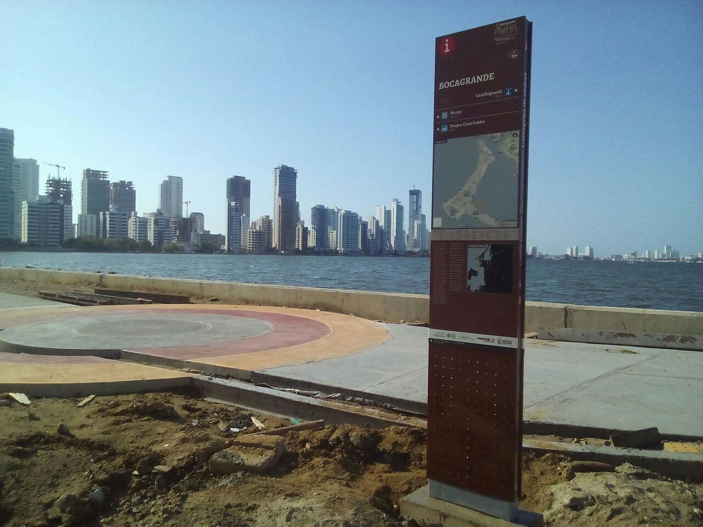
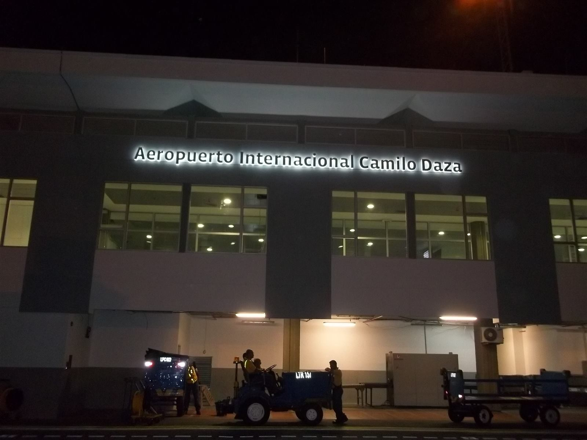

Diseñador gráfico y ambiental con más de 18 años liderando equipos creativos y desarrollando sistemas de señalización, wayfinding y branding para entidades públicas y privadas en Colombia. Desde 2022 extiende ese mismo oficio — resolver cómo algo se entiende y funciona de un vistazo — al desarrollo de software: construye plataformas ERP multi-tenant, integra múltiples proveedores de IA y APIs de terceros, y automatiza flujos de trabajo técnicos junto a agentes de codificación IA.
Branding, identidades, packaging, señalización y soluciones con IA para clientes independientes.
Atención directa a clientes, gestión de cobros y manejo de efectivo · trabajo en equipo en ambientes de alta demanda y presión · adaptación a normas y procedimientos de empresas españolas.
Lideré el área de diseño gráfico ambiental y supervisé la producción de un equipo de técnicos.
Arquitectura de ERPs multi-tenant, integraciones de APIs, MCP y automatización de flujos con agentes de codificación IA.


Además: procesador universal de CSV para formatos variables y errores de codificación · sistemas de Design Tokens para consistencia visual · automatización de flujos mediante comandos personalizados (slash commands) y librerías de prompts reutilizables para desarrollo asistido por IA.
Duranam · FMR International · SignageLabs · Gutiérrez & Enciso (Buffet de Abogados) · Construcciones Fontalvo Álvarez · Munch Burger · La Hormiga · Coolechera · Cervecería Artesanal Neusa (proyecto propio) · Revista LINK, Colegio San José · Urbanización Campano Campestre
Extiendo el mismo pipeline creativo al desarrollo de software: diseño arquitecturas ERP multi-tenant (Next.js + Supabase), integro múltiples proveedores de IA con control de costos, y ejecuto auditorías técnicas multi-rol (seguridad, funcionalidad, diseño) sobre sistemas en producción — incluyendo detección y corrección de vulnerabilidades reales. Colaboración adicional en herramientas propias: plataforma de gestión industrial (VentiTECH), PWA de monitoreo (EcoMedidor) y vectorizador de imágenes (VectorPOD).
Diseñador Gráfico — Corporación Técnica CODETEC, 2004 · Dibujo Técnico, Módulo 1 — SENA, 2006 · Mantenimiento de Computadores, 40h — 2008 · AutoCAD 2D y 3D, 50h — CEFIC, 2015 · Desarrollador Web (HTML5, CSS3, Bootstrap) — Udemy, en curso
Uriel Gómez — Subgerente, DIO Estudio — 301 662 3668
Wendy Peñaranda — RR. HH., Seguridad y Servicios — 301 512 1582
Ana Navarro Garcia
Derys Lambis